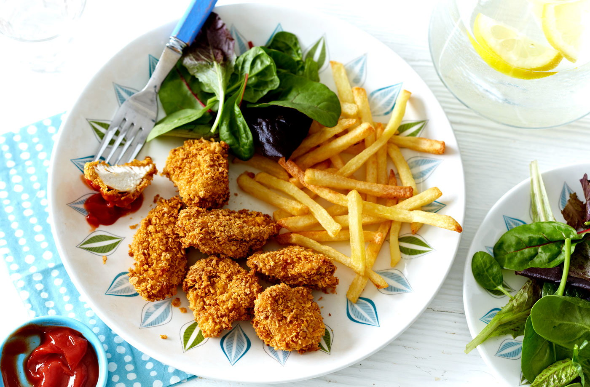

Nuggets

Description
An original twist on a classic kids' favourite; these baked chicken nuggets are made with crispy cornflakes for extra crunch. For an even more flavoursome twist you could try adding grated Parmesan to the cornflakes before coating the chicken. A dish that's guaranteed to go down well with the kids!
Ingredients
- 4 chicken breasts, cut into bite-sized pieces
- 125g (4oz) cornflakes
- 3 tbsp plain flour
- 2 medium eggs, beaten
Steps
- Preheat the oven to 200°C, fan 180°C, gas 6. Put the cornflakes in a food processor and whizz until finely ground. Alternatively, tip into a plastic food bag, wrap the bag in a tea towel and crush finely with a rolling pin.
- Put the cornflakes in a shallow bowl, the flour in a second and the beaten eggs in a third. Season the flour and eggs generously with salt and pepper. Line a large baking tray with non-stick baking paper.
- Working with a handful of chicken pieces at a time, coat first in the seasoned flour, shaking off the excess, then the beaten egg, turning to coat thinly, but thoroughly. Last, dip the chicken in the crushed cornflakes, making sure each piece is completely covered. Space the coated pieces out on the baking tray and repeat until all the chicken is done.
- Cook for 20 minutes, turning halfway through, until golden, crisp and cooked through. Serve with salad and oven chips or sweet potato wedges.